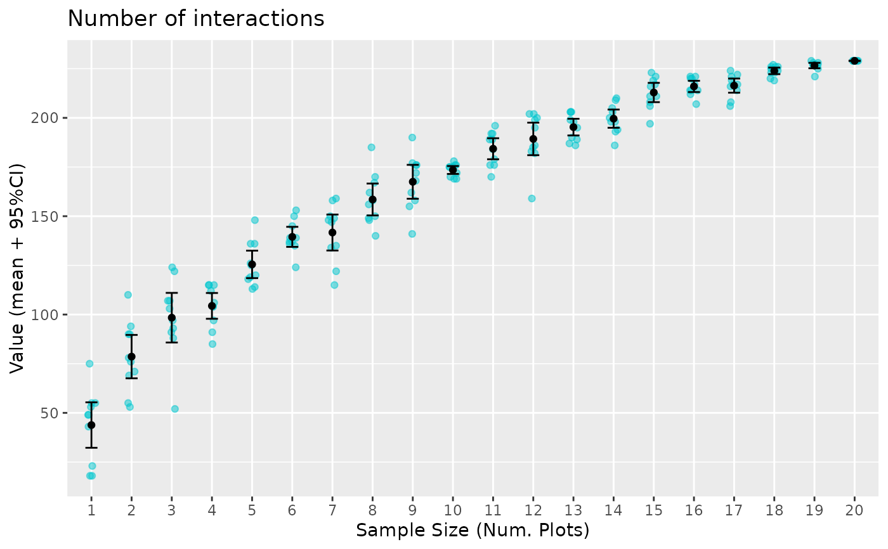

Uses plot accumulation curves to assess whether the estimates of the number
of nodes, links, and link density (a.k.a. connectance) are stable (see Pulgar
et al. 2017 for other descriptors). The function accum_curve plots
accumulation curves for parameters that can be obtained with package
igraph (Csardi & Nepusz, 2006).
NOTE: This function is intended for data sets organised in multiple plots of the same community or locality.
Usage
accum_curve(
int_data,
property = c("vcount", "ecount", "edge_density"),
k = 100
)Arguments
- int_data
data frame containing interaction data.
- property
property: indicates the network property, obtained from igraph functions, which accuracy is being evaluated. Only three options are currently available:
vcount: accuracy of the estimated number of nodes (using igraph function "vcount").
ecount: accuracy of the estimated number of canopy-recruit interactions (using igraph function "ecount").
edge_density: accuracy of the estimated network connectance (using igraph function "edge_density).
- k
An integer number specifying the number of random repetitions of subsets of n plots. In each of the k repetitions, a subset of n randomly chosen plots is combined to build a partial network for which the indicated property is estimated. High values provide more confident estimates of the accuracy, but the function may take long time if k >> 100.
Value
The function returns a list of two objects:
A plot representing the mean and 95% Confidence interval (i.e. 1.96 times the standard error) of the estimate of the property selected when an increasing number of randomly selected plots are considered.
A data frame with the cumulative values of the property for each repetition of k plots. Provided so you can prepare your own customized accumulation plot.
Examples
accum_links <- accum_curve(Amoladeras_int, property="ecount", k=10)
head(accum_links$Data)
#> Value sampleSize
#> 1 53 1
#> 2 49 1
#> 3 49 1
#> 4 55 1
#> 5 55 1
#> 6 43 1
accum_links$Plot
